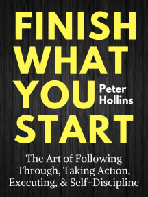

Finish what you start
Stop Thinking, Just Execute
it’s not just as easy as knowing you have to do it and thus doing it. There are powerful reasons we don’t finish what we start and follow through very often. These reasons can generally be split into two camps: inhibiting tactics and psychological roadblocks. Inhibiting tactics are the ways we plan against ourselves without even realizing it. They include: -(1) setting bad goals,
(2) procrastination,
(3) indulging in temptations and distractions, and
(4) poor time management.
Psychological roadblocks are the ways we don’t follow through because we are unconsciously protecting ourselves. These include :
(1) laziness and lack of discipline, (2) fear of judgment, rejection, and failure,
It’s all worthwhile.
Holding the belief that hard work can and will lead to improvement You need to believe in your own abilities and trust in your opportunities. Don’t create self-limiting beliefs that hold you back. Believe what you are doing is valuable and relevant to your goals Mindset 2: Become comfortable with discomfort. Everything you want to do will have elements of discomfort, unless you just want to watch television all day by yourself. Overcoming your instinct to avoid things just because they are uncomfortableConsider Risks
eing hypervigilant about what may go wrong is a tactic employed by highly successful and productive people like Bill Gates Be paranoid and start to question what could go wrong. Think about making contingency plans Be sure to ask yourself how you might lose out if you delay taking action at this moment Chapter 6. No Distraction Zone Minimize your distractions in your environment. It turns out that out of sight is out of mind with distractions Create default actions wherever possible. This is where the easiest and lowest resistance past for you is the path you want the most.even if you do not reach a goal. Keep a scoreboard for everything large and trivial. This keeps you motivated and striving toward growth and progress. Lower your transaction costs by making undesirable behaviors inconvenient and unwieldy while making desirable behaviors convenient and easy Gather all of the information and materials you need all at once and before you get started. This allows you to work interruption-free and gather momentum. Finish what you start !